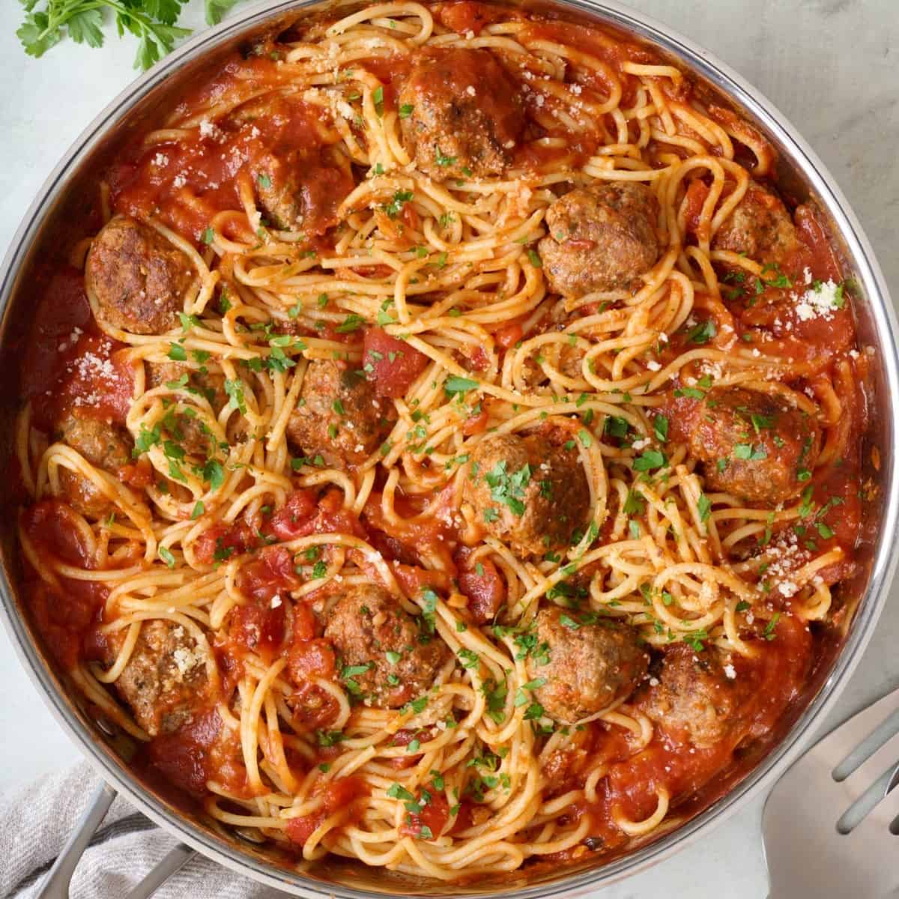

Spaghetti & Meatballs

Description
These savoury meatballs are combined with a rich tomato sauce and perfectly cooked spaghetti form this delicious dish
Ingredients
For the sauce
- 1 tbsp olive oil
- 1 brown onion (chopped)
- 1 garlic clove (finely chopped)
- 1 tsp dried mixed herbs
- 400g tin tomatoes
- 500ml vegetable or beef stock(beef stock preferred)
- 400g dried spaghetti
- Salt and Pepper (to taste)
For the meatballs
- 400g beef mince
- 1 garlic clove (finely chopped)
- ½ tsp dried mixed herbs
- 1 tbsp olive oil
Method
- Heat a large saucepan over a medium heat and add the olive oil.
Once hot, add the onion and cook gently without browning for 4 to 5 minutes, or until softened and translucent.
Add the garlic, continue to cook for 2 minutes until aromatic, then add the dried herbs, tomatoes and stock.
Bring the sauce to a simmer, reduce the heat and simmer gently while you make the meatballs.
- For the meatballs, mix together the beef, garlic and herbs along with a decent pinch of salt and pepper.
Using wet hands roll into 20 balls.
- Heat a frying pan over a medium heat and add the olive oil.
Once hot, fry the meatballs on all sides until nicely coloured, being careful not to burn them.
You may need to do this in batches.
Transfer to the saucepan containing the sauce.
- Continue to simmer the sauce for 10 minutes while you cook the spaghetti.
- Bring a large saucepan water to the boil, add a pinch of salt and cook the spaghetti according to the packet instructions.
Once cooked, drain and tip into the saucepan with the meatball sauce.
Mix well and serve hot.